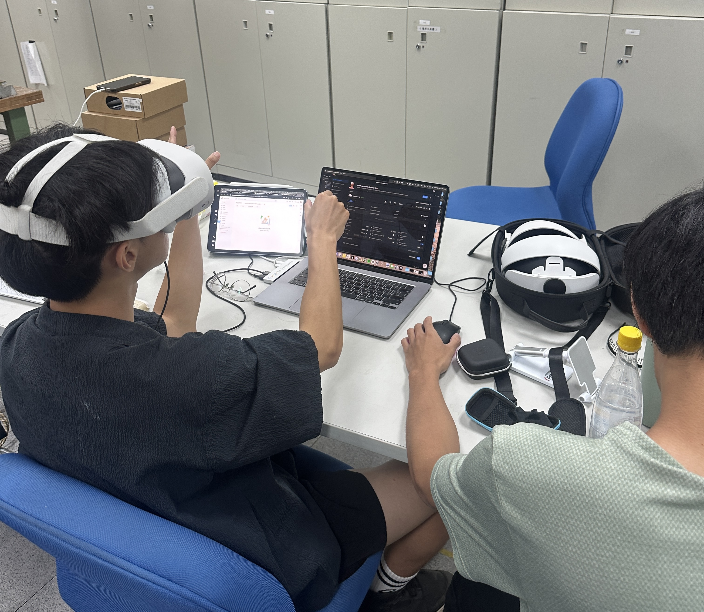
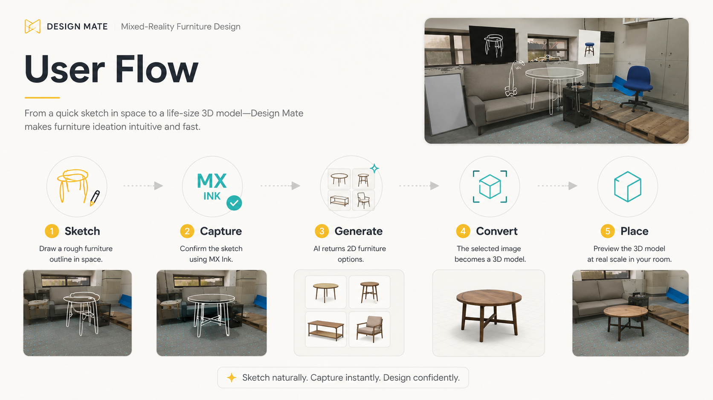
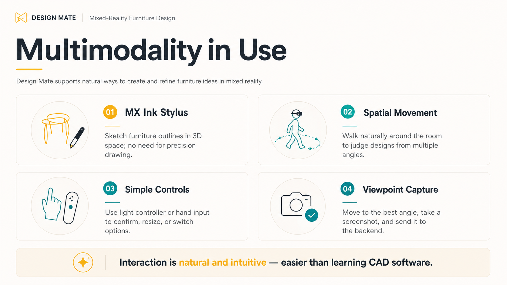
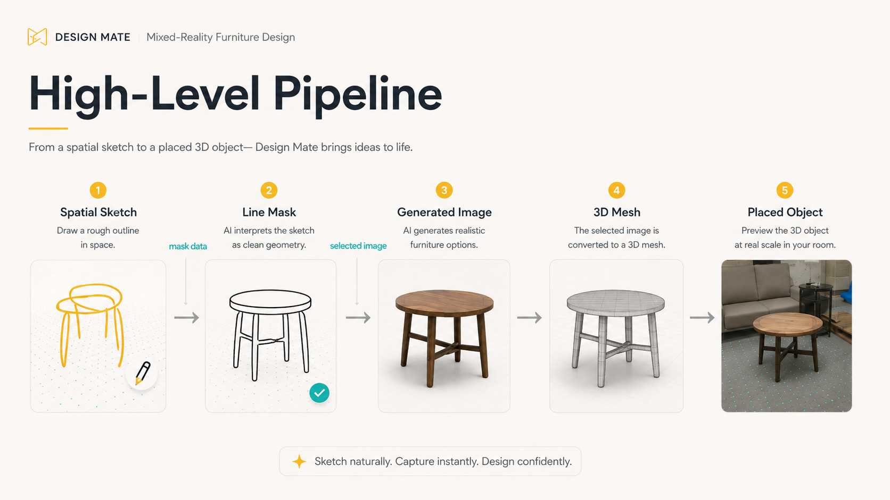
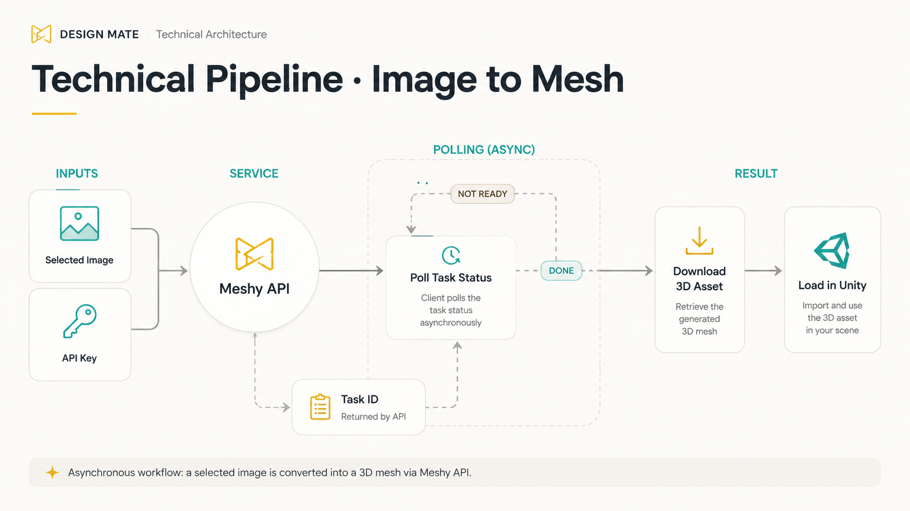
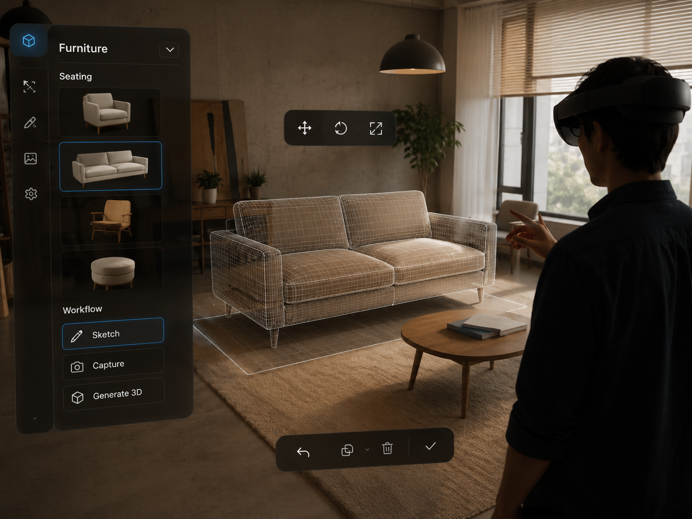
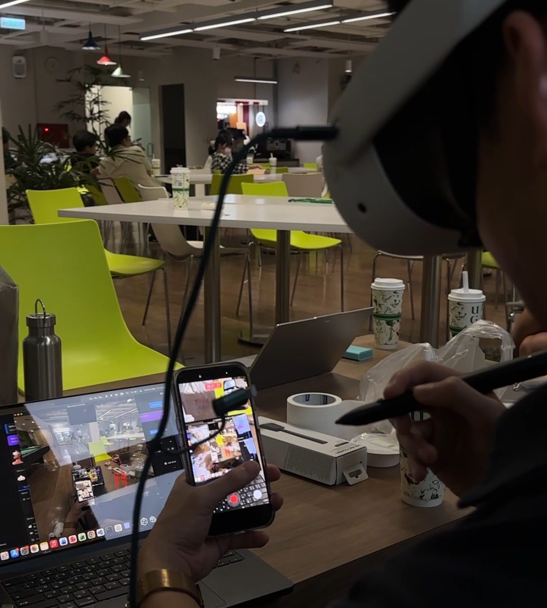
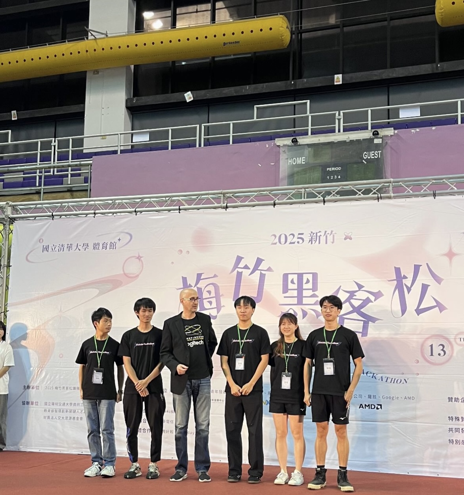

Design Mate
A mixed reality interior design assistant that lets users sketch furniture in space, generate design variations, and preview them directly inside their room using Meta Quest and Logitech MX Ink.
Overview
In Taiwan, many people live in small rented apartments where renovation is off the table. Furniture becomes the primary and often the only way to personalize a space. Yet for most people, planning an interior layout is far from intuitive.
Flat 2D floor-planning tools demand specialized knowledge, and even the best product photography rarely answers the question that matters most: Will this actually look right inside my room?
Design Mate addresses this gap by exploring how mixed reality can transform interior planning from a technical exercise into a creative, spatial one, giving everyday renters the confidence to design on their own terms.

The question
Design question
How might mixed reality let renters design furniture from their own spatial imagination instead of forcing them to browse fixed catalogs or flat planning tools?
Most AR furniture tools are built around selection: browse a catalog, point a device at a corner, and place a pre-existing product. Design Mate takes the opposite approach. Creation comes first. Users define the furniture concept through drawing, then the system helps resolve that sketch into a usable spatial object.
Concept
Sketch first, generate second, place at real scale.
Design Mate is a mixed reality interior design assistant that collapses the gap between imagination and reality. Instead of browsing fixed product catalogs, users draw rough furniture shapes in space, and the system turns those sketches into AI-generated design options, instantly previewable inside their physical room.
The concept is built around a single repeatable loop that keeps creative momentum high and decision friction low.
This loop transforms interior planning from a static, tool-dependent task into an iterative creative exploration: something anyone can do, regardless of design background.
Interaction model
From a rough gesture to a placed object.
The interaction begins with the Logitech MX Ink stylus. Users sketch the outline of a furniture idea directly in mixed reality space. For example, the height of a table, the curve of a chair, or the rough footprint of a shelf. Precision is not required. The goal is to capture proportion, intention, and spatial context rather than produce a polished drawing.
After the sketch is confirmed, the system captures it as an image, sends it into the generation pipeline, and returns several 2D furniture candidates. The user then selects the option that best matches what they imagined. Once selected, the image is converted into a 3D mesh and loaded back into the MR scene.
Core interaction
Sketch in space → generate furniture options → select one design → convert it into a 3D model → place it in the room.

Multimodality in use
The interface depends on movement, not menus.
Design Mate combines several forms of input in one continuous interaction. The MX Ink stylus handles sketching because it feels closer to drawing than operating software. Spatial movement lets users judge scale and proportion by walking around the room. Simple hand or controller actions are reserved for confirmation, resizing, switching options, and viewpoint capture.

System flow
A bridge between sketch, image, and mesh.
Behind the interaction is a three-stage pipeline. First, the spatial sketch is simplified into a clean line mask. Second, the mask is used to generate a furniture image that preserves the user’s rough proportions. Third, the selected image is converted into a 3D mesh that Unity can load into the mixed reality scene.
This structure helped us separate the creative and technical responsibilities of the system. The sketch captures user intention. The image generation stage explores visual form. The mesh conversion stage turns the chosen design into a spatial asset. Each stage has a clear role, which made the prototype easier to build, debug, and explain during the hackathon.

Technical flow
Converting a selected image into a usable 3D asset.
The most technically fragile part of the prototype was the image-to-mesh conversion. Once the user selected a generated furniture image, the system converted that image into a base64 string and sent it to the Meshy API. Meshy returned a task ID rather than an immediate model, so the prototype needed to repeatedly check whether the conversion had finished.
When the task status returned as complete, the generated 3D file was downloaded and loaded into Unity. If the task was not ready, the system continued polling until the mesh became available. This asynchronous structure allowed us to keep the user flow simple while handling the longer processing time required for 3D generation in the background.
For a hackathon prototype, this pipeline was enough to demonstrate the full concept: a user could draw an idea, generate furniture options, select one, and see a 3D version appear in their room. The result was not only a technical proof of concept, but a working interaction loop that made spatial furniture design feel approachable.

Prototype development
A working MR prototype, not only a concept video.
A functional prototype was built in Unity for Meta Quest, integrating spatial sketch input, AI generation, and real-time 3D model placement into a single MR environment. The goal was not just to prove the concept technically, but to produce something testable enough to reveal where the experience holds and where it breaks.
- Sketch-based design input via the Logitech MX Ink stylus in 3D space.
- AI-generated furniture variations produced from the captured sketch or mask.
- Automatic 3D model conversion from selected 2D output via Meshy API.
- Spatial placement of the generated model within the user’s physical environment.


Figure 6. Unity MR prototype build and in-headset testing.
Key innovation
Creation comes before selection.
Design Mate inverts the usual AR furniture pattern. Instead of selecting from pre-existing products first, users define the furniture concept through their own sketch. The system then generates what that intent might look like as a real object.
- User-driven creation. Users sketch their own furniture shapes rather than selecting from pre-existing products. The design space is open from the first interaction.
- AI-generated design variations. Sketches are converted into coherent design options through generative AI, turning rough spatial input into visually resolved proposals.
- Mixed reality placement. Selected furniture is placed at full scale inside the user’s actual room, allowing spatial inspection that no flat image or floor plan can replicate.
Together, these shifts reframe MR from a visualization tool into a creative design environment; one that meets users at the level of intent, not catalog literacy.
Technology & system architecture
MR hardware, generative output, and 3D conversion in one loop.
The prototype integrates MR hardware, a generative AI pipeline, and a 3D mesh conversion service into a unified real-time environment.
Provides the spatial computing environment. Furniture models are rendered and placed within the user’s room at scale.
Primary sketch input in MR space. Enables precise spatial drawing that captures furniture outline and proportion.
Manages rendering, spatial object placement, and coordination between sketch input, AI generation, and asset integration.
Generates furniture design variations from sketch input and converts rough outlines into visually resolved candidates.
Image-to-mesh pipeline that converts the selected AI-generated design into a 3D model ready for placement in Unity.
Full pipeline
My contribution
Design direction, interaction structure, and team alignment.
Working across design and coordination, I held the dual responsibility of shaping the user experience and keeping the team’s moving parts aligned throughout the hackathon. In a compressed timeline, that combination matters: a well-designed experience falls apart if the components are not integrated, and integration without design direction produces something technically functional but experientially incoherent.
UX strategy & interface design
I led the definition of the interaction model, establishing how the five-step workflow should feel at each transition and which friction points mattered most to eliminate. The guiding principle was that the interface should never ask users to think in design terms; it should translate intent into spatial outcome without requiring background knowledge.
Interface components were designed to guide users through a process that is unfamiliar by nature, in this case sketching furniture in 3D space, while keeping the experience exploratory rather than procedural. Visual hierarchy, spatial cues, and progressive disclosure were used to reduce cognitive load at each stage.
MR interaction flow design
I translated the project concept into a structured interaction map, defining how spatial sketching, AI generation, and MR placement connect as a continuous experience rather than disconnected steps. This included identifying where handoffs between the user and the system needed to feel seamless, and where deliberate pauses should be implemented through thorough UX, allowing the user to observe before acting — was part of the design.
Project coordination
Alongside design work, I helped maintain coherence across the team’s parallel workstreams: design, technical development, and presentation. This meant tracking dependencies, surfacing integration issues early, and ensuring that the prototype demonstration was structured to communicate the concept clearly, not just show that it ran.
Future development
The next version would make the room feel more editable.
Several directions are currently under consideration for the next iteration of Design Mate.
Bridge visual quality gaps between Unity development environments and Meta Quest deployment.
Style preferences, object naming, and furniture category customization surfaced progressively.
Resize, rotate, and reposition generated models within MR space after placement.
Generate furniture concepts from inspiration photos, not only spatial sketches.
Demo
Prototype walkthroughs.
The short-form demo is useful for showing the interaction quickly on mobile. The full walkthrough is better for explaining the complete pipeline from sketch input to generated 3D placement.

- Team
- 林揚森 (Yangsen Lin), 黃昱傑 (Yujie Huang) , 游昕浩 (Xinhao You) , 林穎沛 (Yingpei Lin)
- Tools
- Meta Quest · Logitech MX Ink · Unity · Nano Banana · Meshy API
- My role
- UI/UX Design · UX Strategy · MR Interaction Flow Design · Assistant Project Management · Presentation Narrative